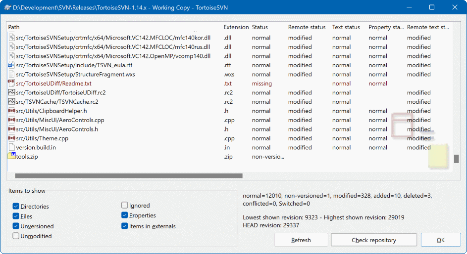

19服务端：VisualSVN 建仓库
前面十八节都站在客户端这一侧。这一节换到服务器那边，用 VisualSVN Server Manager 建出团队的第一个仓库。 服务端的东西只需要装一次、配一次——装好之后，建仓库、加用户、配权限、做备份， 全都在管理器的图形窗口里点鼠标完成，不需要敲任何命令。
- 装在哪：VisualSVN Server 只装在团队共享的那台服务器上（或一台常年开机的开发机）。每个人自己电脑上装的是配套的客户端 TortoiseSVN。
- 谁去动：通常只需要一个人——当初搭环境的那位。普通开发同学读这一节，主要是为了弄清「仓库地址到底是怎么来的」。
- 多久动一次：建仓库、加人是低频操作，可能一年也就干几次。日常的改、更、提还是在客户端右键完成。
所以后面三节（19、20、21）可以理解为「管服务器的人」的活，普通同学重点看「拿到仓库地址」那一段就够了。
打开服务器管理器
管理仓库的第一步是打开管理器。它是一个标准的 Windows 管理窗口，装完 VisualSVN Server 之后就有了，不用额外配置。
Add/Remove Snap-in（添加/删除管理单元）把 VisualSVN Server 加进来。全程是勾选框，不用输入任何东西。
管理器界面长什么样
打开之后你会看到一个左右分栏的窗口。第一次看会觉得空，其实结构非常简单：左边是树，右边是详情，上面是工具栏。

• Repositories：所有仓库都放在这个节点下面。团队有几个项目，这里就有几个子节点。右键这个节点可以新建仓库，右键某个仓库可以改属性、做备份。
• Users：用户账号。谁能连上你们的服务器，由这里的名单决定。这是在服务器上建账号，客户端不需要各自注册。
• Groups：用户组。把用户按角色（开发、测试、外包）分好组，以后配权限时直接对着组配，不用一个一个点人名。
• Jobs：定时任务。最典型的就是每天自动备份仓库，建好之后服务器自己跑，不用你记得手动点。
② 右侧 · 详情区——在左边选中什么，右边就显示什么。选中一个仓库时，这里会列出它的仓库地址（URL）、提交次数、占用大小这些信息。想知道仓库现在多重、最近有没有人提交，看这一栏就够了，不用登录服务器翻文件夹。
③ 顶部工具栏——一排按钮，对应最常用的几个动作：新建仓库、新建用户、新建用户组等。这些按钮和右键菜单里的项目是同一套功能，习惯用哪个就用哪个。
④ 顶部菜单栏——里面的 Action 菜单同样装着新建、属性、备份这些命令，还有 View 控制界面怎么显示。找不到某个功能时，先翻一遍 Action 菜单。
| 左侧节点 | 它管什么 | 你这个角色会在这里做什么 |
|---|---|---|
Repositories | 仓库的集合 | 建新仓库、看仓库大小、做备份、改权限。用得最多的一支。 |
Users | 用户账号 | 新人入职加账号、离职停用账号、忘记密码时重置。 |
Groups | 用户组 | 建「开发组」「外包组」这类角色组，配权限时按组来。 |
Jobs | 定时任务 | 建每天自动备份的任务，这是整台服务器里最值得配的一项。 |
创建你的第一个仓库
仓库（Repository）就是放代码的「总档案库」，所有版本历史都躺在里面。建仓库是这一个向导的事情，几步点完。
VisualSVN Server 根节点，找到 Repositories，在上面右键。
New User 或 New Group 上去，那是加人的。
Repository Name 里填名字，比如 MyProject。这个名字会直接变成地址的一部分，所以用英文、别带空格，一看就知道是哪个项目最好。
FSFS，没有特殊需求就别动它。下一小节有对比表格。
Next、Finish。完成后左边 Repositories 下面立刻多出这个仓库节点，右边详情区会显示它的地址。
这是最容易搞混的一点，记住这个对应关系：服务器上建的仓库叫 MyProject，那么它的地址就是 https://服务器名/svn/MyProject。建了第二个叫 Tools，地址就是 https://服务器名/svn/Tools。
中间那段 /svn/ 是服务器自动加上的固定前缀，不是你起的名字。发地址给同事时一定要给完整的一整串，从 https:// 开始复制，别自己手写。
仓库类型：FSFS 还是 VDFS
| 类型 | 它是什么 | 什么时候选它 |
|---|---|---|
| FSFS 推荐 | Subversion 标准的仓库存储方式，一个仓库就是服务器硬盘上的一个目录树。 | 绝大多数团队都选它，也是向导里默认选中的那个。备份、迁移、排错都有现成的资料。 |
| VDFS 特殊 | VisualSVN 自带的一种特殊仓库类型，面向「多台服务器之间互相同步」的场景。 | 只有当你们需要在多台服务器上跑同一套仓库并保持同步时才考虑。单机使用选它没有任何好处，反而更复杂。 |
仓库类型是创建时定下来的，建完想换一般只能重新建一个再迁数据。拿不准的时候一律选 FSFS——这是标准做法，也是绝大多数教程和工具默认支持的路径。
建出标准目录结构：trunk / branches / tags
空仓库刚建出来是什么都没有的。而团队协作约定俗成的做法是在仓库根下放三个目录：
trunk（主干，日常开发都在这里）、branches（分支，开独立开发线）、
tags（标签，记录已发布的版本）。这套结构不用检出到本地就能建，直接在服务器端用仓库浏览器完成最方便。
trunk、branches、tags，一共建三次。名字必须严格一致——工具链和团队约定都按这三个名字来，拼错一个字母后面就会别扭。
/MyProject/trunk，而不是 /MyProject/MyProject/trunk。
拿到仓库地址，发给同事
仓库建好了，接下来最要紧的一件事就是把地址准确地发出去。手抄容易错，让管理器帮你复制。
URL of repository，一路确定就能拉到代码。这就是第 2 节那套流程，地址正是从这里来的。
VisualSVN 自带一个 Web 界面。在任何一台机器的浏览器里输入仓库地址（https://服务器名/svn/MyProject），登录后就能逐层浏览目录、看文件内容、看每个文件的修改历史，连差异比对都能在网页上点出来。
它的用处：给只读的同事（产品、美术、领导）看代码和文档，不用教他们装客户端；自己在别人的电脑上临时查一个文件，不用装任何东西；手机、平板打开也能看，出门在外应急查一下很方便。
但看归看：日常提交、更新还是老老实实用 TortoiseSVN，网页端不做开发。
仓库在服务器硬盘上确实是一个目录，你也能在文件管理器里翻到它。但绝对不要直接进去改、删、挪里面的文件——那里面存的是版本数据库，不是给你直接编辑的普通文件。
- 改文件：一律走客户端——检出到本地改完再提交，或直接在上面那个仓库浏览器里操作。
- 删仓库：在管理器里右键删除，让它按流程清理，别去硬盘上直接删文件夹。
- 改名/搬家：用管理器或右键菜单里的重命名、迁移功能，手改目录名会让所有客户端的地址失效。
- 拷文件进去：想批量放代码就用客户端的
Import（第 22 节），别用复制粘贴。
一句话：服务器上的仓库目录只对 VisualSVN 自己有意义，人只管在图形界面里操作。
- 服务器上跑着 VisualSVN Server，你能随时打开 VisualSVN Server Manager。
Repositories下面有一个命名清晰的仓库节点。- 仓库里有
trunk/branches/tags三个目录。 - 手上有一串
https://开头的完整地址，可以发给同事了。
接下来第 20 节讲怎么加人、怎么控制谁能看谁能改——在发给同事地址之前，最好先把权限配好，免得地址发出去谁都能连。